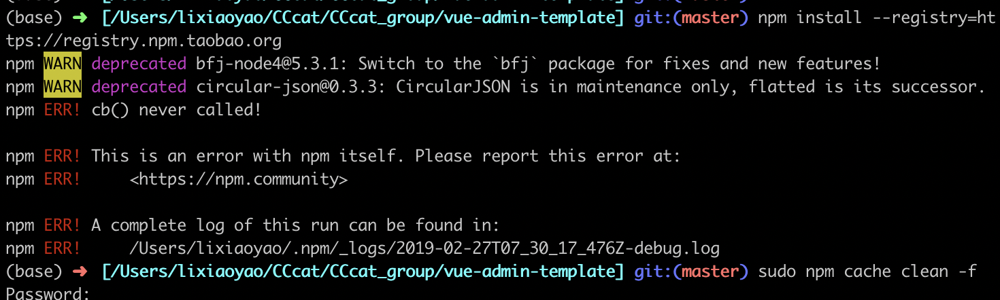

#介绍
vue-element-admin 是基于 Vue2.0，配合使用 Element UI 组件库的一个前端管理后台集成解决方案。它使用了最新的前端技术栈，提炼了典型的业务模型，提供了丰富的功能组件，它可以帮助你快速搭建企业级中后台产品原型。
#建议
项目的定位是后台集成方案，不适合当基础模板来进行二次开发。
# Build Setup
1
2
3
4
5
6
7
8
9
10
11
12
13
14
15
16
17
18
|
git clone https://github.com/PanJiaChen/vue-admin-template.git
npm install
npm install --registry=https://registry.npm.taobao.org
npm run dev
npm run build
npm run build --report
|
1.克隆项目到本地
使用 cd 命令到自己想创建的文件夹路径下：
1
2
3
| $ cd 'CCcat/'
$ git clone https://github.com/PanJiaChen/vue-admin-template.git
|
克隆项目到本地，会在本地新创建一个文件夹 vue-admin-template ：
1
| $ cd vue-admin-template/
|
2.初始化项目
安装方式有 2 种
1
| $ npm install --registry=https://registry.npm.taobao.org
|
3.初始化 npm install 报错
1
| npm ERR! cb() never called!
|
输入以下命令，再试一遍：
1
2
3
| $ sudo npm cache clean -f
$ npm install --registry=https://registry.npm.taobao.org
|
图示：

#本地运行项目
#打包项目
# 结语
Vue 后台集成方案 之 基础模板，教程到这就完成啦！
(∩_∩)